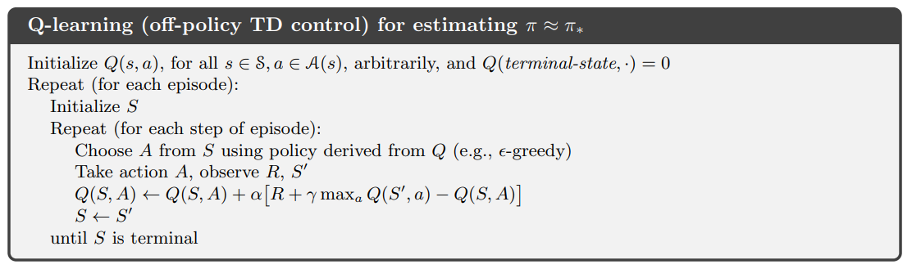
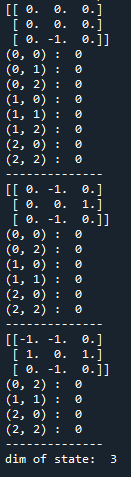
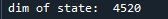
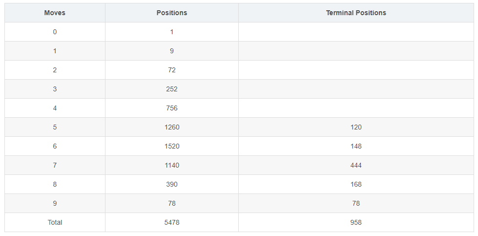

在 强化学习实战 | 自定义Gym环境之井子棋 中，我们构建了一个井字棋环境，并进行了测试。接下来我们可以使用各种强化学习方法训练agent出棋，其中比较简单的是Q学习，Q即Q(S, a)，是状态动作价值，表示在状态s下执行动作a的未来收益的总和。Q学习的算法如下：

可以看到，当agent在状态S，执行了动作a之后，得到了环境给予的奖励R，并进入状态S'。同时，选择最大的Q(S', a)，更新Q(S, a)。所谓表格型Q学习，就是构建一个Q(S, a)的表格，维护所有的状态动作价值。 一个很好的示例来自 Q-Learning玩Flappy Bird，随着游戏的不断进行，Q表格中记录的状态越来越多，状态动作价值也越来越准确，于是小鸟也飞得越来越好。
我们也要构建这样的Q表格，并希望通过Q_table[state][action] 的检索方式访问其储存的状态动作价值，我们可以用字典实现：
| '[1, 0, -1, 0, 0, 0, 1, -1, 0]' | {'(0,1)':0, '(1,0)':0, '(1,1)':0, '(1,2)':0, '(2,2)':0} |
| '[0, 1, 0, -1, 0, 0, -1, 0, 1]' | ...... |
在本文中我们要达到如下的目标：
- 改写 强化学习实战 | 自定义Gym环境之井子棋 中的测试代码，要更有逻辑，更能凸显强化学习中 agent 和环境的概念。
- agent 随机选择空格进行动作，每次动作前，更新Q表格：若表格中不存在当前状态，则将当前状态及其动作价值添加至Q表格中。
- 玩50000次游戏，查看Q表格中的状态数
步骤1：创建文件
在任意目录新建文件 Table QLearning play TicTacToe.py
步骤2：创建类 Agent()
Agent() 类 需要有（1）随机落子的动作生成函数（2）Q表格（3）更新Q表格的函数，且新增表格中全部状态动作价值设为0。代码如下：
class Agent(): def __init__(self): self.Q_table = {} def getEmptyPos(self, env_): # 返回空位的坐标 action_space = [] for i, row in enumerate(env_.state): for j, one in enumerate(row): if one == 0: action_space.append((i,j)) return action_space def randomAction(self, env_, mark): # 随机选择空格动作 actions = self.getEmptyPos(env_) action_pos = random.choice(actions) action = {'mark':mark, 'pos':action_pos} return action def updateQtable(self, env_): # 更新Q表格 state = env_.state if str(state) not in self.Q_table: # 新增状态 self.Q_table[str(state)] = {} actions = self.getEmptyPos(env_) for action in actions: self.Q_table[str(state)][str(action)] = 0 # 新增的状态动作价值为0
步骤3：创建类 Game()
Game() 类需要有（1）是/否显示游戏过程、更改行动时间间隔的属性（2）开局随机先后手（3）切换行动方的函数（4）游戏结束时，可以新建游戏。代码如下：
class Game(): def __init__(self, env): self.INTERVAL = 0 # 行动间隔 self.RENDER = False # 是否显示游戏过程 self.first = 'blue' if random.random() > 0.5 else 'red' # 随机先后手 self.currentMove = self.first # 当前行动方 self.env = env self.agent = Agent() def switchMove(self): # 切换行动玩家 move = self.currentMove if move == 'blue': self.currentMove = 'red' elif move == 'red': self.currentMove = 'blue' def newGame(self): # 新建游戏 self.first = 'blue' if random.random() > 0.5 else 'red' self.currentMove = self.first self.env.reset() def run(self): # 玩一局游戏 self.env.reset() # 在第一次step前要先重置环境 不然会报错 while True: if self.currentMove == 'blue': self.agent.updateQtable(self.env) # 只记录蓝方视角下的局面 action = self.agent.randomAction(self.env, self.currentMove) state, reward, done, info = self.env.step(action) if self.RENDER: self.env.render() self.switchMove() time.sleep(self.INTERVAL) if done: self.newGame() if self.RENDER: self.env.render() time.sleep(self.INTERVAL) break
步骤4：测试
（1）玩一局游戏，显示Q表格，及Q表格中储存的状态数：
env = gym.make('TicTacToeEnv-v0') game = Game(env) for i in range(1): game.run() for state in game.agent.Q_table: print(state) for action in game.agent.Q_table[state]: print(action, ': ', game.agent.Q_table[state][action]) print('--------------') print('dim of state: ', len(game.agent.Q_table))
输出：

（2） 玩50000局游戏，查看Q表格中储存的状态数：
env = gym.make('TicTacToeEnv-v0') game = Game(env) for i in range(50000): game.run() print('dim of state: ', len(game.agent.Q_table))
输出：

在论文中，我找到了井字棋的状态数：

因为Q表中录入的状态全部是非终止状态，正好有：4520 = 5478 - 958，这说明算法没有问题。
整体代码如下：

import gym import random import time # 查看所有已注册的环境 # from gym import envs # print(envs.registry.all()) class Game(): def __init__(self, env): self.INTERVAL = 0 # 行动间隔 self.RENDER = False # 是否显示游戏过程 self.first = 'blue' if random.random() > 0.5 else 'red' # 随机先后手 self.currentMove = self.first self.env = env self.agent = Agent() def switchMove(self): # 切换行动玩家 move = self.currentMove if move == 'blue': self.currentMove = 'red' elif move == 'red': self.currentMove = 'blue' def newGame(self): # 新建游戏 self.first = 'blue' if random.random() > 0.5 else 'red' self.currentMove = self.first self.env.reset() def run(self): # 玩一局游戏 self.env.reset() # 在第一次step前要先重置环境 不然会报错 while True: if self.currentMove == 'blue': self.agent.updateQtable(self.env) # 只记录蓝方视角下的局面 action = self.agent.randomAction(self.env, self.currentMove) state, reward, done, info = self.env.step(action) if self.RENDER: self.env.render() self.switchMove() time.sleep(self.INTERVAL) if done: self.newGame() if self.RENDER: self.env.render() time.sleep(self.INTERVAL) break class Agent(): def __init__(self): self.Q_table = {} def getEmptyPos(self, env_): # 返回空位的坐标 action_space = [] for i, row in enumerate(env_.state): for j, one in enumerate(row): if one == 0: action_space.append((i,j)) return action_space def randomAction(self, env_, mark): # 随机选择空格动作 actions = self.getEmptyPos(env_) action_pos = random.choice(actions) action = {'mark':mark, 'pos':action_pos} return action def updateQtable(self, env_): state = env_.state if str(state) not in self.Q_table: self.Q_table[str(state)] = {} actions = self.getEmptyPos(env_) for action in actions: self.Q_table[str(state)][str(action)] = 0 env = gym.make('TicTacToeEnv-v0') game = Game(env) for i in range(1): game.run() for state in game.agent.Q_table: print(state) for action in game.agent.Q_table[state]: print(action, ': ', game.agent.Q_table[state][action]) print('--------------') print('dim of state: ', len(game.agent.Q_table))